前言
SD卡(Secure Digital Memory Card)是一种存储介质，基于NAND闪存技术，作为MMC(Multimedia Card)的替代。一般用于多媒体播放器，相机，手机，随后也大量用于IoT设备和汽车电子。根据SD卡尺寸，可以分为SD、miniSD、microSD。
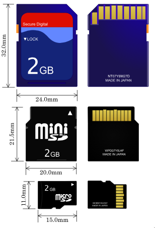
SD卡的速度等级标准当前在用的有两种，一种是普通速度标记，另一种是UHS速度标记，不同速度标准对应的总线模式也不同。现在SD协会又出了新的速度等级标准：Video Speed Class，使用UHS总线。SD卡的容量也有标准，从SDSC到SDUC。
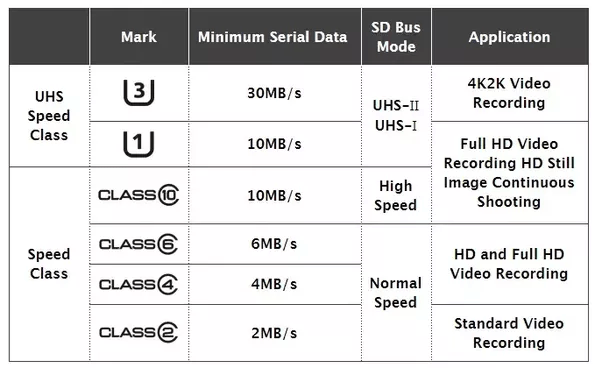 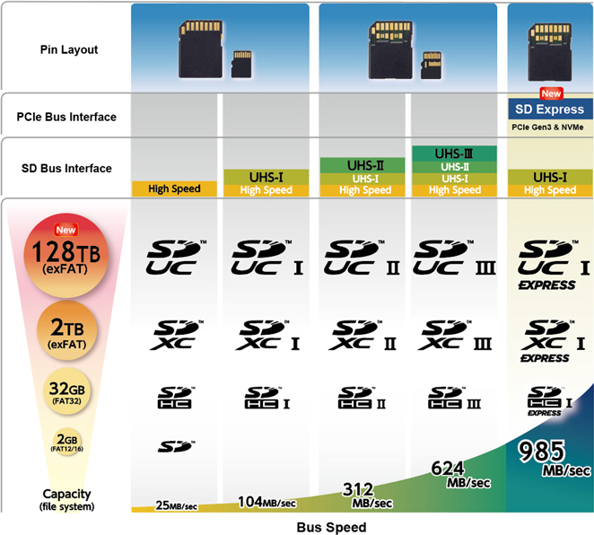
SD卡的参数可以在SD卡的贴纸或者丝印上看到。
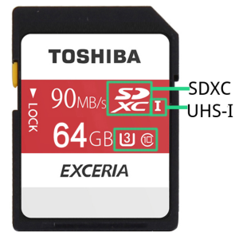
而microSD卡原名是TF卡(Trans-flash Card)，SD插槽兼容MMC卡，也可以通过飞线方式将eMMC接到SD插槽。
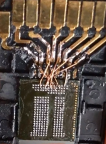
本文基于SD物理层简化规范第六版，主要研究解锁机制。
SDIO(Secure Digital Input Output)是由SD物理层规范修改而来，属于SD规范的扩展，除了支持SDIO规范的储存卡，还支持SDIO外围设备，例如WiFi模块、GPS模块、CMOS传感器模块等。
I/O informations
下面是MMC卡和SD卡引脚的对比
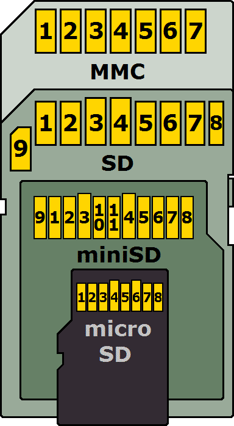
在不同的总线协议和传输模式下，这些引脚都负责不同的功能，本文主要研究SD模式的规范。在Type一栏，有如下定义：
- S - Power Supply
- I - Input
- O - Output using Pull Push Drivers
- PP - I/O using Pull Push Drivers
| Pin # | Name | Type | Description |
|---|---|---|---|
| 1 | CD/DAT3 | I/O/PP | Card Detect/Data Line [Bit3] |
| 2 | CMD | I/O/PP | Command/Response |
| 3 | VSS1 | S | Supply voltage ground |
| 4 | VDD | S | Supply voltage |
| 5 | CLK | I | Clock |
| 6 | VSS2 | S | Supply voltage ground |
| 7 | DAT0 | I/O/PP | Data Line [Bit0] |
| 8 | DAT1 | I/O/PP | Data Line [Bit1] |
| 9 | DAT2 | I/O/PP | Data Line [Bit2] |
下面是我们要研究的SD卡，SDSC，刚好最大2GB，上面印着M2B9 2GB Made in Japan，网上不能搜索到这些信息。
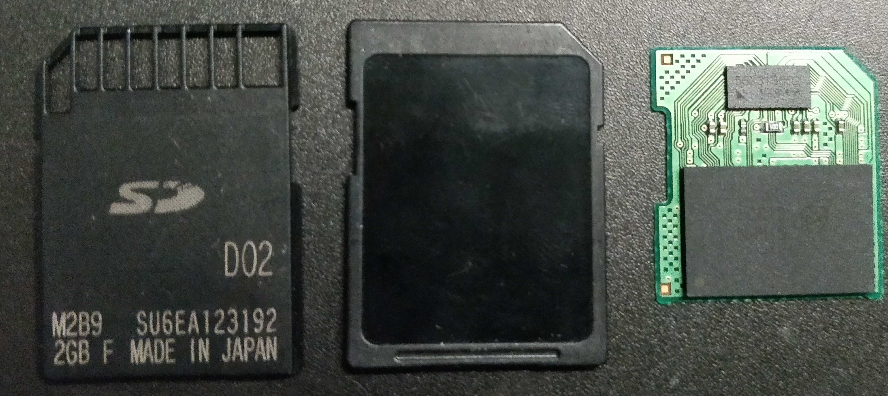
再看SD主控芯片，56X31B002 AC00145R，无法搜索到。 但是下面的存储芯片印有镁光Logo，在FBGA & Component Marking Decoder网站可以查询FPGA Code。是SLC NAND Flash，VBGA100封装，但是官网信息不太准确，只有16GB的版本。
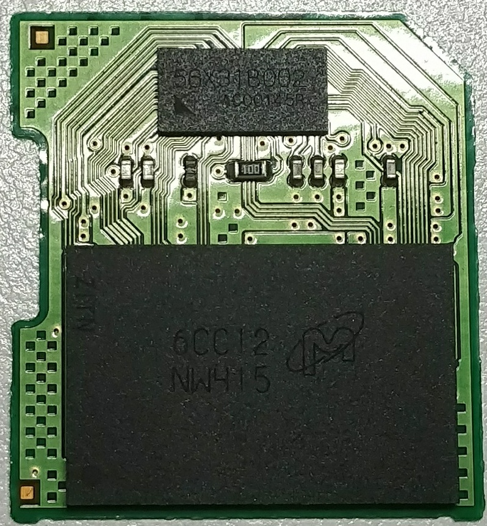
Registers
OCR,CID,CSD,SCR携带了卡的特定信息，RCA和DSR储存着实际的配置参数，SSR和CSR则携带状态信息。 因为规范制定者有强迫症，所以寄存器都是三位缩写，如果三位不能准确表达意思，就把R去掉。
| Name | length(bit) | Description | Optional |
|---|---|---|---|
| CID | 128 | Card Identification Data，包括厂商ID、OEM ID、产品名、产品编号、生产日期以及校验和 | 必选 |
| RCA | 16 | Relative Card Address，用于寻址，默认0x0000，SPI模式下不可用 | 必选 |
| DSR | 16 | Driver Stage Register，用于改善总线性能 | 可选 |
| CSD | 128 | Card Special Data，较为复杂，包含关于卡各种操作的条件信息：错误类型、最大数据访问时间、速率、DSR可用状态等 | 必选 |
| SCR | 64 | SD Configuration Register，包含了SD卡支持的特性，规范版本 | 必选 |
| OCR | 32 | Operation Condition Register，携带了当前电源信息 | 必选 |
| SSR | 512 | SD Status Register，包含当前SD卡特性和应用特性的状态信息，如总线数据宽度、安全模式、SD卡类型、速度等 | 必选 |
| CSR | 32 | Card Status Register，包含了当前卡执行命令的状态信息，体现在响应中，如上锁状态，错误信息等 | 必选 |
Architecture
卡内带有上电检测电路，与主控接口和存储区接口相连，每个引脚和卡主控相连，主控通过存储接口对存储区进行操作。
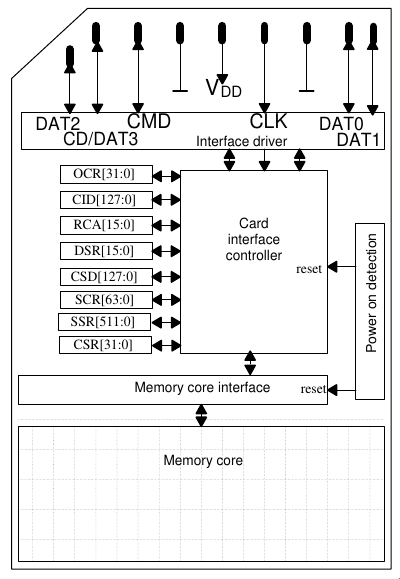
SDIO
而在SDIO规范中，定义了两种类型的SDIO卡：低速卡与高速卡，定义了SDIO卡的三种模式：
- SPI bus mode
- One-bit SD bus mode - 指令和数据分离的传输模式
- Four-bit SD bus mode - 高速卡支持，指令单独占用一个通道，使用另外4通道传输数据，SD卡的默认模式
SD Bus Protocol
SD总线通信主要由CMD(Command Token, 操作命令)、DAT(Data, 数据)组成。CMD和DAT由不同的通道并行传输，CMD和Response走同一条通道，CMD来自Host(上位机)，Response(响应)来自SD卡，Response只针对特定的CMD出现。
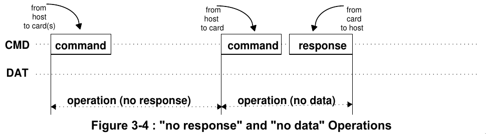
SD规定以块为单位进行读写操作，紧随着CMD后出现。每个数据块结尾带有CRC校验位。由终止操作由终止指令完成。
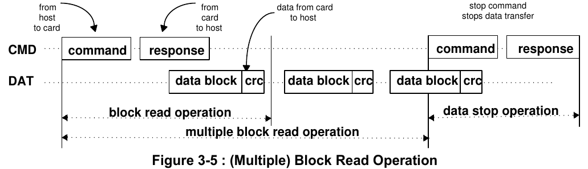
写过程会附带一个busy信号。
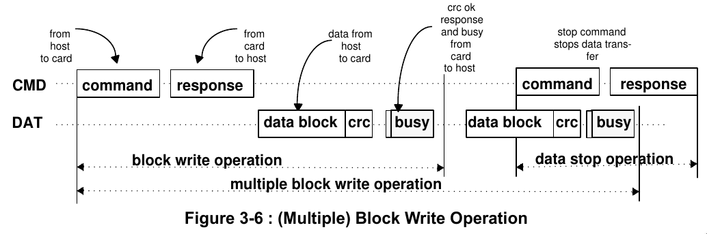
CMD Format
Command Token的长度是48-bit，起始位是0，传输位是1，表示来自Host的数据。Content携带了命令，地址信息以及参数。结尾带有7位的CRC(Cyclic Redundancy Check)，结束位是0。因为这个特性，Response的首个字节比CMD的首个字节小0x40。
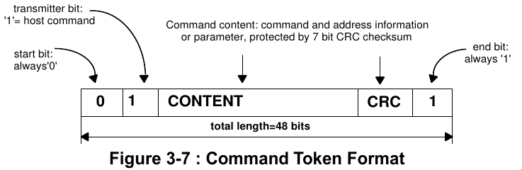
Response Token有四种场景，根据场景的不同采用不同的长度，分别是48-bit(R1,R3,R6)，136-bit(R2)。传输位是0，表示来自SD卡的数据。
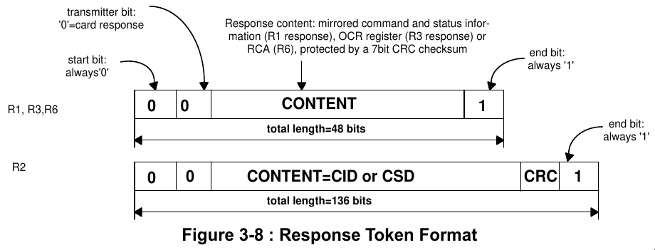
Data Packet Format
通常模式下，数据通过DAT[0-3]引脚传输。和CMD一样，起始位0，结束位1，带有CRC校验。总线宽度默认1-bit。
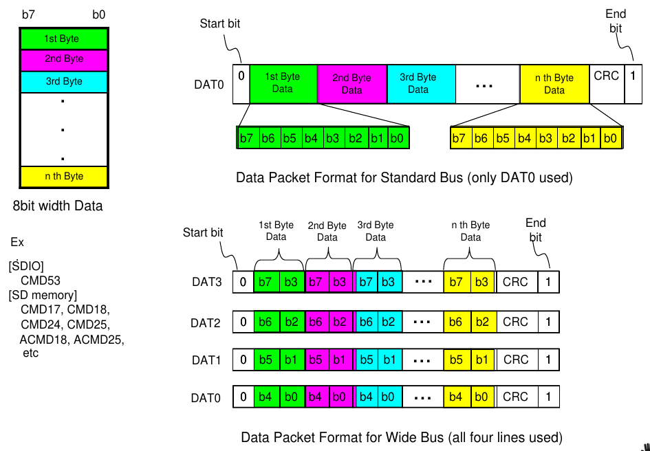
CRC7
SD卡使用CRC7/MMC算法作为CMD的校验，公式如下 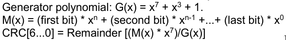 将多项式转化为二进制G(x)
10001001
在数据帧M(x)后补上长度位divisor-1，就是7，使用模2除法，数据帧除以10001001得到CRC
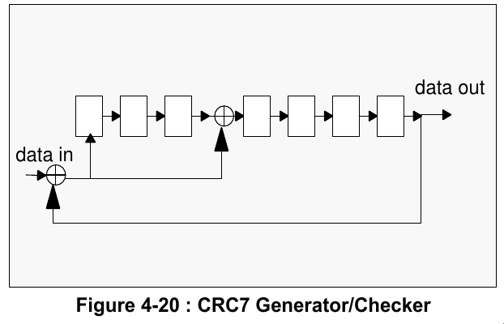
CRC16
SD卡使用CRC-16/CCITT-XMODEM算法作为Data的校验。宽总线模式下每行独立计算CRC，公式如下
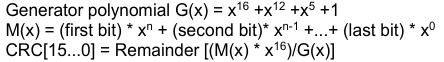
将多项式转化为二进制G(x)，第16位超出长度，忽略。
0001000000100001
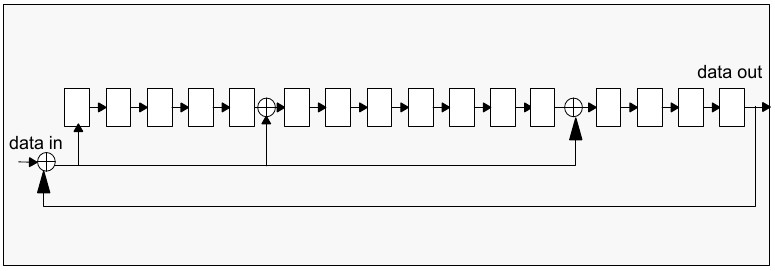
Response Type
SD卡总共有五种类型的响应，SDIO支持附加的响应类型R4，R5。除R3以外，响应包的结尾都有CRC校验。
- R1 正常响应命令，可携带busy信号(R1b)
- R2 CID,CSD响应
- R3 OCR响应
- R6 RCA响应
- R7 卡接口条件响应
不同响应对应的格式
R1的参数部分是32位，对应了卡的状态，由于版本迭代问题，规范里没有明确说是CSR，CSR寄存器也是后面定义的。R2直接返回CID或CSD的数据。R3返回OCR的数据。
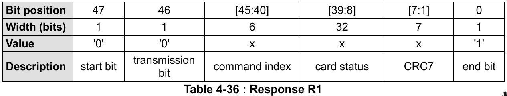 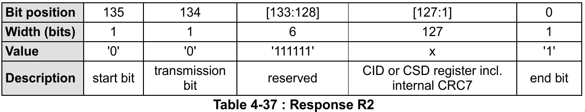 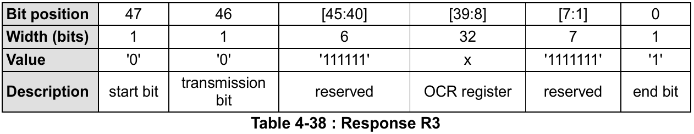 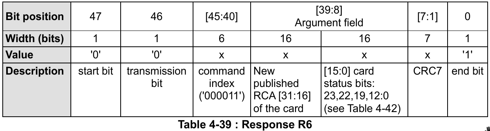 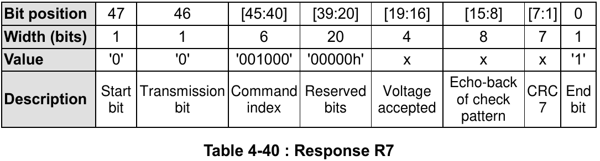
Function mode
SD卡的操作模式有两种种，默认是inactive：
- card indentification mode 卡认证模式
- data transfer mode 数据传输模式
UHS-II下和SD模式下，卡认证模式不同。
Command
Command主要有两种类型————广播和寻址，具体细分有如下四种:
- broadcast commands (bc), no response
- broadcast commands with response (bcr) (Note: No open drain on SD card)
- addressed (point-to-point) commands (ac), no data transfer on DAT lines
- addressed (point-to-point) data transfer commands (adtc), data transfer on DAT lines
CMD5，CMD52-54是SDIO特有的模式
最高有效位(Most Significant Bit, MSB)在前，最低有效位(Least Significant Bit, LSB)在后。
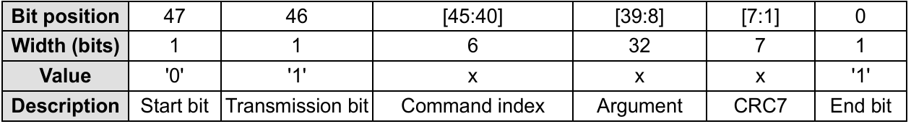
有如下分类：
| Class # | Name |
|---|---|
| 0 | Basic Commands |
| 1 | Command and Queue Function Commands |
| 2 | Block Oriented Read Commands |
| 3 | Reversed |
| 4 | Block Oriented Write Commands |
| 5 | Erase Commands |
| 6 | Block Oriented Write Protection Commands |
| 7 | Lock Card |
| 8 | Application Specific Commands |
| 9 | I/O Mode Commands |
| 10 | Switch Function Commands |
| 11 | Function Extension Commands |
Class 7 锁卡相关命令有三个，其中CMD16设定块长度，用来设置密码。CMD42进行上锁/解锁操作。上锁状态的卡可以响应Class 0的命令.
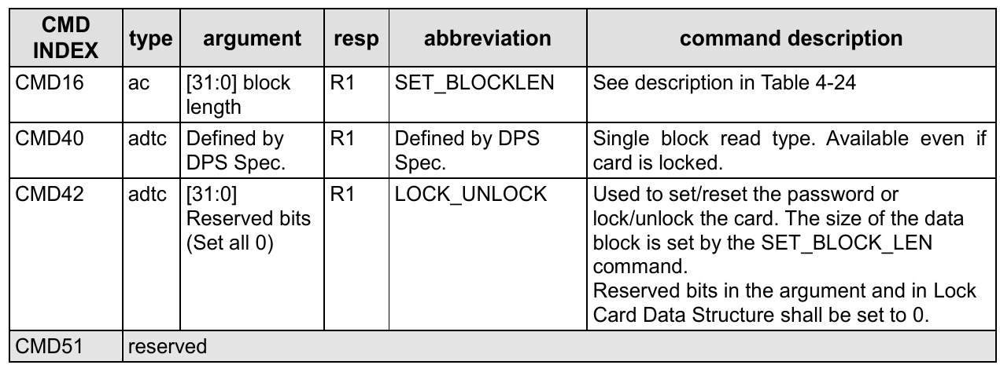
在SDSC卡中，可通过SET_BLOCK_LEN来指定数据的块长度。而在SDHC和SDXC卡中，块长度固定为512bytes。
Application-Specific Commands
Application-Specific Commands是Commands的扩展，CMD55是触发ACMD的条件，ACMD41也就是CMD55接一个CMD41。
ACMD41是初始化命令，设定HCS(Host Capacity Support)，决定SD卡的类型，电源控制以及电平。ACMD6是设置总线宽度，决定使用1-bit还是4-bits的Data传输。只有未解锁和传输状态才能使用ACMD6。
Status Information
SD卡状态信息可以在R1类型的响应里看到，比如CMD13，SD卡有三种状态信息：
- SD Status
- Card Status
- Task Status
下面是每一位的类型定义：
E - Error bit S - Status bit R - Detected and set for the actual command response X - Detected and set during command execution. 上位机可以通过执行命令的响应获得状态信息
还有状态位的清除条件：
A - According to the card current status. B - Always related to the previous command. 发送特定CMD来清除 C - Clear by read.
R1响应携带卡状态信息，长度32-bit，储存在CSR。下面是CSR每一位的定义，预留位已经省略。
| Bits | Identifier | Type | Value | Description | Clear Condition |
|---|---|---|---|---|---|
| 31 | OUT_OF_RANGE | E R X | ‘0’= no error ‘1’= error |
The command’s argument was out of the allowed range for this card. | C |
| 30 | ADDRESS_ERROR | E R X | ‘0’= no error ‘1’= error |
A misaligned address which did not match the block length was used in the command. | C |
| 29 | BLOCK_LEN_ERROR | E R X | ‘0’= no error ‘1’= error |
The transferred block length is not allowed for this card, or the number of transferred bytes does not match the block length. | C |
| 28 | ERASE_SEQ_ERROR | E R | ‘0’= no error ‘1’= error |
An error in the sequence of erasecommands occurred. | C |
| 27 | ERASE_PARAM | E R X | ‘0’= no error ‘1’= error |
An invalid selection of write-blocksfor erase occurred. | C |
| 26 | WP_VIOLATION | E R X | ‘0’= no protected ‘1’= protected |
Set when the host attempts to writeto a protected block or to the temporary or permanent write protected card. | C |
| 25 | CARD_IS_LOCKED | S X | ‘0’= card unlocked ‘1’= card locked |
When set, signals that the card is locked by the host. | A |
| 24 | LOCK_UNLOCK_FAILED | E R X | ‘0’= no error ‘1’= error |
Set when a sequence or passworderror has been detected in lock/unlock card command. | C |
| 23 | COM_CRC_ERROR | E R | ‘0’= no error ‘1’= error |
The CRC check of the previous command failed. | B |
| 22 | ILLEGAL_COMMAND | E R | ‘0’= no error ‘1’= error |
Command not legal for the cardstate | B |
| 21 | CARD_ECC_FAILED | E R X | ‘0’= no error ‘1’= error |
Card internal ECC was applied butfailed to correct the data. | C |
| 20 | CC_ERROR | E R X | ‘0’= no error ‘1’= error |
Internal card controller error. | C |
| 19 | ERROR | E R X | ‘0’= no error ‘1’= error |
A general or an unknown error occurred during the operation. | C |
| 16 | CSD_OVERWRITE | E R X | ‘0’= no error ‘1’= error |
Can be either one of the following errors: - The read only section of the CSD does not match the card content. - An attempt to reverse the copy (set as original) or permanent WP (unprotected) bits was made. |
C |
| 15 | WP_ERASE_SKIP | E R X | ‘0’= no protected ‘1’= protected |
Set when only partial address space was erased due to existing write protected blocks or the temporary or permanent write protected card was erased. | C |
| 14 | CARD_ECC_DISABLED | S X | ‘0’= enabled ‘1’= disabled |
The command has been executed without using the internal ECC. | A |
| 13 | ERASE_RESET | S R | ‘0’= cleared ‘1’= set |
An erase sequence was cleared before executing because an out of erase sequence command was received. | C |
| 12:9 | CURRENT_STATE | S X | 0 = idle 1 = ready 2 = ident 3 = stby 4 = tran 5 = data 6 = rcv 7 = prg 8 = dis 9-14 = reserved 15 = reserved for I/O mode |
The state of the card when receiving the command. If the command execution causes a state change, it will be visible to the host in the response to the next command. The four bits are interpreted as a binary coded number between 0 and 15. |
B |
| 8 | READY_FOR_DATA | S X | ‘0’= not ready ‘1’= ready |
Corresponds to buffer empty signaling on the bus. | A |
| 6 | FX_EVENT | S X | ‘0’= No event ‘1’= Event invoked |
Extension Functions may set this bit to get host to deal with events. | A |
| 5 | APP_CMD | S R | ‘0’= enabled ‘1’= disabled |
The card will expect ACMD, or an indication that the command has been interpreted as ACMD. | C |
| 3 | AKE_SEQ_ERROR(SD Memory Card app. spec.) | E R | ‘0’= no error ‘1’= error |
Error in the sequence of the authentication process. | C |
12:9是4位长度，转成10进制，对应着卡的操作阶段 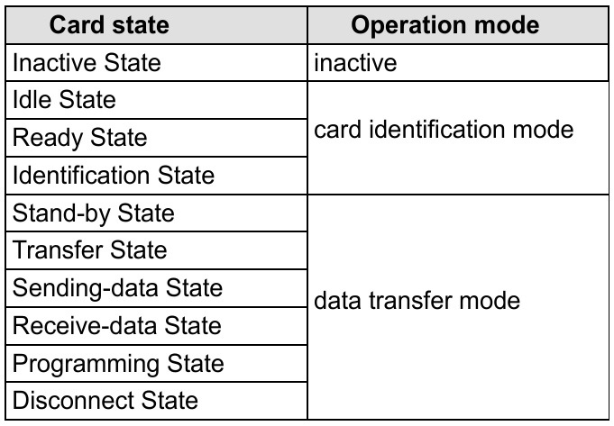
SD Protocol Sniff
等长布线(wiring length maching)是PCB设计领域的术语，一般用于高速IO，比如DDR。飞线尽量使用等长线，控制时钟线与其他信号线之间的距离，这也是SD卡厂商对于PCB设计的要求。
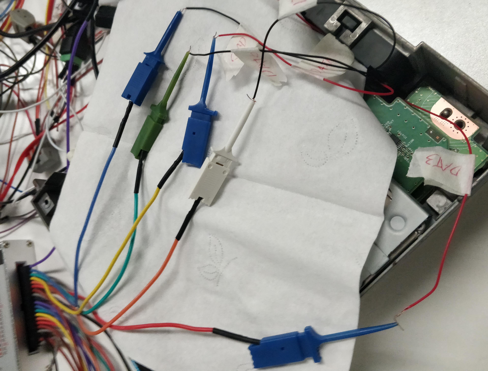
实际上SD高速模式下也就20MHz，是否使用等长线对数据的影响不大。最关键的还是逻辑分析仪的采样率，一开始使用100MHz采样率的逻辑分析仪经常乱码，后来换成500MHz采样率的LA5016就能正常使用。
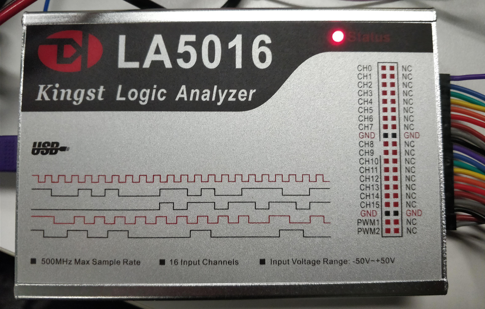
选择采样率和时间，另外选择电平。选择SDIO以及时钟上升沿(rising edge)触发。这样就能得到准确的逻辑电平。如下图，当上升沿对应的数据为0。
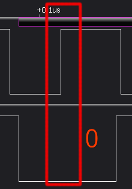
SD Unlock
解锁的会话只在一次上电中生效，下一次上电时SD卡会自动回到上锁状态。解锁过程首先使用CMD7选择卡，如果设置了FEP，那么需要解锁COP。然后使用CMD16设置所需块长度，8-bit解锁操作 + 8-bit密码长度 + 实际密码的长度，最后发送CMD42解锁。
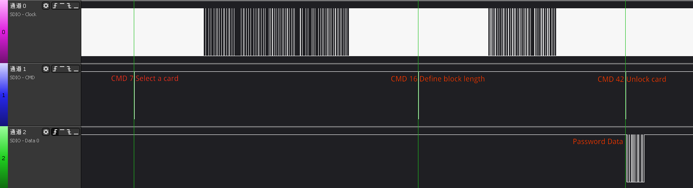
CMD 42
CMD42用于解锁设备，有V1.0和V2.0两个版本。解锁方式也有两种，一种是使用强制擦除密码(Force Erase Password, FEP)，另一种是使用密码解锁。只有COP(Card Ownership Protection)特性的SD卡，才带有非易失性的FEP寄存器。COP特性是SD规范6.0中新加的，市面上几乎很少有COP特性的SD卡。 根据CMD的格式，01代表CMD请求，101010代表42，推断出01101010是CMD42的第一个字节，也就是6A。 CMD42的参数前4个bit应该是0，CSR的对应状态位bit-25应该由1变为0，bit-24为0。
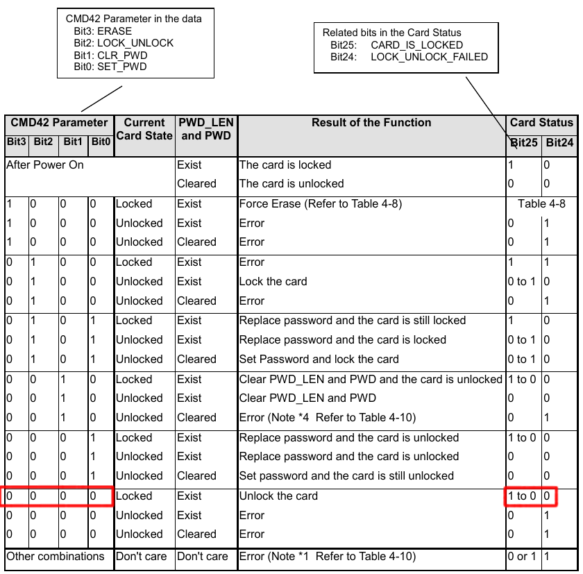
通过逻辑分析仪解析上位机和SD卡之间的通信数据，得到了下面的报文，Command Index,Arguments,CRC7都符合前面的定义。
6A 00 00 00 00 51
最后一个字节51可以通过CRC7校验
本文研究的目标设备较老，不支持COP，解锁上锁位的0代表解锁操作，1代表上锁。最后使用CMD42，因此CMD42的操作参数是00000000，也就是CMD42[00h]
CMD42的Data部分，第一个字节描述了具体的操作，前三位预留，一般置0，第四位表示COP特性，在解锁过程中，后面四位都应该是0。第二个字节表示Password Length区间为8-bit，单位是byte。因此password最大长度是128-bytes，因此密码长度最大16字节，从第三位开始都是密码数据，最后带上16位的CRC。
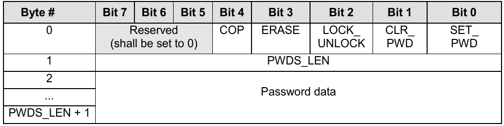
CMD7的地址随机
47 4B 47 00 00 6F
[47:41] 01000111 start bit + Command index
[40:32] 01001011 RCA 4B
[31:24] 01000111 RCA 47
[23:16] 00000000 stuff bits
[15:8] 00000000
[7:0] 01101111 CRC7 + end bit
07 02 00 07 00 79
CMD16命令如下, 倒数第二行便是参数SET_BLOCKLEN，设置块长度，必须是偶数长度。响应类型是R1，0b00010010的十进制为18，也就是2字节的参数加上16-bytes密码
50 00 00 00 12 2F
[47:41] 01010000 start bit + Command index
[40:32] 00000000
[31:24] 00000000
[23:16] 00000000
[15:8] 00010010 SET_BLOCKLEN
[7:0] 00101111 CRC7 + end bit
CMD16的响应
10 02 00 09 00 07
[47:41] 00010000 start bit + Command index
[40:32] 00000010 Card Status
[31:24] 00000000 Card Status
[23:16] 00001001 Card Status
[15:8] 00000000 Card Status
[7:0] 00000111 CRC7 + end bit
CMD42响应的第一个字节为00101010也就是2A。响应类型是R1。
在逻辑分析仪抓取到了CMD42的响应
将Parameter字段转换成二进制，根据CSR定义，下面返回的状态是未解锁，ready,tran模式
2a 02 00 09 00 6f
[47:41] 00010000 start bit + Command index
[40:32] 00000010 Card Status Locked
[31:24] 00000000 Card Status
[23:16] 00001001 Card Status
[15:8] 00000000 Card Status
[7:0] 00000111 CRC7 + end bit
当CMD42的Data发送完成，再发送CMD13，根据CSR定义，下面返回的状态是已解锁，ready,tran模式，APP_CMD关闭
0D 00 00 09 00 07
[47:41] 00010000 start bit + Command index
[40:32] 00000000 Card Status Unlocked
[31:24] 00000000 Card Status
[23:16] 00001001 Card Status
[15:8] 00000000 Card Status
[7:0] 01101111 CRC7 + end bit
Analyze Data
在KingstVIS找到Data0的信道，在CMD42后面对齐上升沿截取区间，导出时钟信道和Data0信道为TXT。
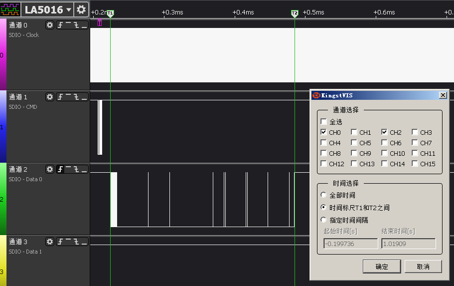
最后导出的数据实际上还是csv。在KingstVIS里选择CSV导出则为倒序，所以才选择TXT格式。这里字符编码是ANSI，在Linux下会乱码，所以把Title删除。
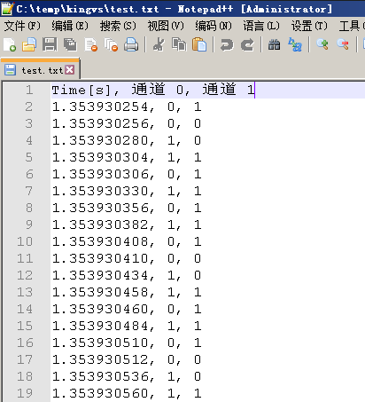
通过下面的脚本，可以将Data0数据打印成可读数据。
#!/usr/bin/env python3
# -*- coding: utf-8 -*-
import csv
import sys
import getopt
import binascii
def parse_csv(csv_file):
try:
with open(csv_file, 'r') as f:
reader = csv.reader(f)
last_ch0_v = 0
bits = []
for line in reader:
current_ch0_v = int(line[1])
if (current_ch0_v ^ last_ch0_v) and last_ch0_v == 0:
bits.append(str(int(line[2])))
last_ch0_v = current_ch0_v
return bits
except Exception as e:
print(e)
def crc16_calc(data):
crc = 0x0000
poly = 0x1021
for b in data:
cur_byte = 0xFF & b
for i in range(0, 8):
bit = ((cur_byte >> (7-i) & 1) == 1)
c15 = ((crc >> 15 & 1) == 1)
crc <<= 1
if (c15 ^ bit):
crc ^= poly
return crc & 0xFFFF
if __name__ == '__main__':
if len(sys.argv) < 3:
usage()
try:
options, args = getopt.getopt(sys.argv[1:], "f:o")
csv_file = ''
output_file = ''
for opt, arg in options:
if opt == '-f':
csv_file = arg
elif opt == '-o':
output_file = arg
bits = parse_csv(csv_file)
remainder = len(bits) % 8
bits = bits[0:len(bits) - remainder]
keys_list = []
crc_data = []
keys_len = 0
# 去掉Data的第一位标志位
if bits[0] == '0':
bits = bits[1:]
for i in range(0, len(bits), 8):
byte = bits[i] + bits[i+1] + bits[i+2] + bits[i+3] + \
bits[i+4] + bits[i+5] + bits[i+6] + bits[i+7]
n = i/8
if n == 0 :
if int(byte, 2) == 0:
keys_list.append(int(byte, 2))
else:
print("CMD42 data block parameters error.")
exit()
elif n == 1:
keys_len = int(byte, 2)
keys_list.append(keys_len)
print("Keys length: " + str(keys_len) + "-bytes")
elif n > 1 and n <= (keys_len + 1):
keys_list.append(int(byte, 2))
elif (keys_len + 2) <= n <= (keys_len + 3):
crc_data.append(int(byte, 2))
else:
if (crc_data[0]*16*16 + crc_data[1]) == crc16_calc(keys_list):
x = bytearray(keys_list[2:keys_len+2])
print("Key:", str(binascii.b2a_hex(x))[2:(keys_len+1)*2])
print("CRC:", hex(crc16_calc(keys_list)))
print("\nAnalyse compeleted!")
else:
print("CRC error!")
exit()
else:
print("Data Error")
except Exception as e:
print(e)
usage()
def usage():
print("Usage:python kinstvis_sdio_parser.py -f test.csv")
去掉第一位起始位，解析CMD42 Data结构，再进行CRC校验，校验成功。
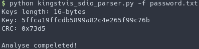
密码如下
5ffca19ffcdb5899a82c4e265f99c76b
MMC Utils
下一步是写SD解锁工具，镁光的官方文档提供了添加上锁解锁功能的Demo，通过修改mmc-utils可以实现解锁。
git clone git://git.kernel.org/pub/scm/linux/kernel/git/cjb/mmc-utils.git
mmc-utils/mmc.h
#define MMC_SET_BLOCKLEN 16 /* ac [31:0] block len R1 */
#define MMC_LOCK_UNLOCK 42 /* adtc R1b */
#define MMC_CMD42_UNLOCK 0x0 /* UNLOCK */
#define MMC_CMD42_SET_PWD 0x1 /* SET_PWD */
#define MMC_CMD42_CLR_PWD 0x2 /* CLR_PWD */
#define MMC_CMD42_LOCK 0x4 /* LOCK */
#define MMC_CMD42_SET_LOCK 0x5 /* SET_PWD & LOCK */
#define MMC_CMD42_ERASE 0x8 /* ERASE */
#define MAX_PWD_LENGTH 32 /* max PWDS_LEN: old+new */
#define MMC_BLOCK_SIZE 512 /* data blk size for cmd42 */
#define MMC_R1_ERROR (1 << 19) /* R1 bit19 */
#define MMC_R1_LOCK_ULOCK_FAIL (1 << 24) /* R1 bit24 */
mmc-utils/mmc.c
{do_lock_unlock, -3,
"cmd42", "<password> <s|c|l|u|e> <device>\n"
"s\tset password\n"
"c\tclear password\n"
"l\tlock\n"
"sl\tset password and lock\n"
"u\tunlock\n"
"e\tforce erase\n",
NULL},
mmc-utils/mmc_cmds.h
//lock/unlock feature implementation
int do_lock_unlock(int nargs, char **argv)
{
int fd, ret = 0;
char *device;
__u8 data_block[MMC_BLOCK_SIZE] = {0};
__u8 data_block_onebyte[1] = {0};
int block_size = 0;
struct mmc_ioc_cmd idata;
int cmd42_para; //parameter of cmd42
char pwd[MAX_PWD_LENGTH + 1]; //password
int pwd_len; //password length
__u32 r1_response; //R1 response token
if (nargs != 4)
{
fprintf(stderr, "Usage: mmc cmd42 <password> <s|c|l|u|e> <device> \n");
exit(1);
}
strcpy(pwd, argv[1]);
pwd_len = strlen(pwd);
if (!strcmp("s", argv[2]))
{
cmd42_para = MMC_CMD42_SET_PWD;
printf("Set password: password=%s ...\n", pwd);
}
else if (!strcmp("c", argv[2]))
{
cmd42_para = MMC_CMD42_CLR_PWD;
printf("Clear password: password=%s ...\n", pwd);
}
else if (!strcmp("l", argv[2]))
{
cmd42_para = MMC_CMD42_LOCK;
printf("Lock the card: password=%s ...\n", pwd);
}
else if (!strcmp("sl", argv[2]))
{
cmd42_para = MMC_CMD42_SET_LOCK;
printf("Set password and lock the card: password - %s ...\n", pwd);
}
else if (!strcmp("u", argv[2]))
{
cmd42_para = MMC_CMD42_UNLOCK;
printf("Unlock the card: password=%s ...\n", pwd);
}
else if (!strcmp("e", argv[2]))
{
cmd42_para = MMC_CMD42_ERASE;
printf("Force erase ... (Warning: all card data will be erased together with PWD!)\n");
}
else
{
printf("Invalid parameter:\n"
"s\tset password\n"
"c\tclear password\n"
"l\tlock\n"
"sl\tset password and lock\n"
"u\tunlock\n"
"e\tforce erase\n");
exit(1);
}
device = argv[nargs - 1];
fd = open(device, O_RDWR);
if (fd < 0)
{
perror("open");
exit(1);
}
if (cmd42_para == MMC_CMD42_ERASE)
block_size = 2; //set blk size to 2-byte for Force Erase @DDR50 compability
else block_size = MMC_BLOCK_SIZE;
ret = set_block_len(fd, block_size); //set data block size prior to cmd42
printf("Set to data block length = %d byte(s).\n", block_size);
if (cmd42_para == MMC_CMD42_ERASE)
{
data_block_onebyte[0] = cmd42_para;
}
else
{
data_block[0] = cmd42_para;
data_block[1] = pwd_len;
memcpy((char *)(data_block + 2), pwd, pwd_len);
}
memset(&idata, 0, sizeof(idata));
idata.write_flag = 1;
idata.opcode = MMC_LOCK_UNLOCK;
idata.arg = 0; //set all 0 for cmd42 arg
idata.flags = MMC_RSP_R1 | MMC_CMD_AC | MMC_CMD_ADTC;
idata.blksz = block_size;
idata.blocks = 1;
if (cmd42_para == MMC_CMD42_ERASE)
mmc_ioc_cmd_set_data(idata, data_block_onebyte);
else
mmc_ioc_cmd_set_data(idata, data_block);
ret = ioctl(fd, MMC_IOC_CMD, &idata); //Issue CMD42
r1_response = idata.response[0];
printf("cmd42 response: 0x%08x\n", r1_response);
if (r1_response & MMC_R1_ERROR)
{ //check CMD42 error
printf("cmd42 error! Error code: 0x%08x\n", r1_response & MMC_R1_ERROR);
ret = -1;
}
if (r1_response & MMC_R1_LOCK_ULOCK_FAIL)
{
//check lock/unlock error
printf("Card lock/unlock fail! Error code: 0x%08x\n", r1_response & MMC_R1_LOCK_ULOCK_FAIL);
ret = -1;
}
close(fd);
return ret;
}
//change data block length
int set_block_len(int fd, int blk_len)
{
int ret = 0;
struct mmc_ioc_cmd idata;
memset(&idata, 0, sizeof(idata));
idata.opcode = MMC_SET_BLOCKLEN;
idata.arg = blk_len;
idata.flags = MMC_RSP_R1 | MMC_CMD_AC;
ret = ioctl(fd, MMC_IOC_CMD, &idata);
return ret;
}
实际上是通过ioctl控制的，编译之后，可以上锁，但是再也无法解锁成功，只能换一种方式。
https://github.com/torvalds/linux/blob/master/include/uapi/linux/mmc/ioctl.h
sudo ./mmc scr read /sys/bus/mmc/devices/mmc0:aaaa/
type: 'SD'
version: SD 3.0x
bus widths: 4bit, 1bit,
sudo ./mmc cmd42 123456 s /sys/bus/mmc/devices/mmc0:aaaa/
Set password: password=123456 ...
Modify the kernel module
因为第三方工具无法实现，现在只能修改内核模块了。本人的操作系统是Arch Linux，MMC驱动属于内核模块，所以不需要重新编译整个内核。而不是像Ubuntu直接builtin。
Arch Linux的内核模块目录如下，我的电脑是HP 840G3，SD卡使用PCI通道，主要会涉及下面三个驱动。
/lib/modules/$(uname -r)/kernel/drivers/mmc/core/mmc_core.ko.xz
/lib/modules/$(uname -r)/kernel/drivers/mmc/core/mmc_block.ko.xz
/lib/modules/$(uname -r)/kernel/drivers/mmc/host/rtsx_pci_sdmmc.ko.xz
/lib/modules/$(uname -r)/kernel/drivers/misc/cardreader/rtsx_pci.ko.xz
如果重新下载官方源码编译内核模块，会出现奇怪的错误。首先是vermagic匹配问题，内核版本，处理器特性不匹配则不允许挂载。因为Linux 3.7后加入了模块签名机制，可以通过modinfo查看系统自带的内核模块，没有签名会导致无法挂载。
$ modinfo mmc_core
filename: /lib/modules/4.18.10-arch1-1-ARCH/kernel/drivers/mmc/core/mmc_core.ko.xz
license: GPL
srcversion: 72D2DBEB18AB4B898BE5331
depends:
retpoline: Y
intree: Y
name: mmc_core
vermagic: 4.18.10-arch1-1-ARCH SMP preempt mod_unload modversions
sig_id: PKCS#7
signer:
sig_key:
sig_hashalgo: md4
signature: 30:82:02:A5:06:09:2A:86:48:86:F7:0D:01:07:02:A0:82:02:96:30
以下省略
parm: use_spi_crc:bool
我们可以在/usr/lib/modules/$(uname -r)/build/目录进行编译，无需另外配置。只需要把MMC的core代码拷贝到目标目录下。就可以直接make，然后重新挂载MMC内核模块驱动。
cp ./core/* /usr/lib/modules/$(uname -r)/build/drivers/mmc/core/
make modules SUBDIRS=drivers/mmc/core
Building modules, stage 2.
MODPOST 7 modules
rmmod rtsx_pci_sdmmc && rmmod mmc_core
insmod /usr/lib/modules/$(uname -r)/build/drivers/mmc/core/mmc_core.ko
insmod /lib/modules/$(uname -r)/kernel/drivers/mmc/host/rtsx_pci_sdmmc.ko.xz
Add Unlock Function
在mmc_ops.h加入unlock_mmc声明
int unlock_mmc(struct mmc_card *card, u8* key_buf,int key_len);
随后编写具体实现，首先设定块长度，随后发送CMD42 ADTC命令。
int unlock_mmc(struct mmc_card *card, u8* key_buf,int key_len)
{
int err;
int block_size = key_len + 2;
struct mmc_request mrq;
struct mmc_command cmd_sbl;
struct mmc_command cmd;
struct mmc_data data;
struct scatterlist sg;
u8 *data_buf = NULL;
/*------------CMD 16----------------*/
// 1 byteflag + 1 byte password length + 16 bytes password
memset(&cmd_sbl, 0, sizeof(struct mmc_command));
cmd_sbl.opcode = MMC_SET_BLOCKLEN;
cmd_sbl.arg = block_size;
cmd_sbl.flags = MMC_RSP_R1 | MMC_CMD_AC;
err = mmc_wait_for_cmd(card->host, &cmd_sbl, MMC_CMD_RETRIES);
if (err)
{
printk("%s failed block_size=%d \n",__func__,block_size);
goto out;
}
/*-----------CMD 42-----------------*/
// CMD
memset(&cmd, 0, sizeof(struct mmc_command));
cmd.opcode = MMC_LOCK_UNLOCK; // CMD 42
cmd.arg = 0; // set all 0 for cmd42 arg
cmd.flags = MMC_RSP_R1 | MMC_CMD_ADTC;
// Data
memset(&data, 0, sizeof(struct mmc_data));
data.timeout_ns = (2*1000*1000*1000);
data.blksz = block_size;
data.blocks = 1;
data.flags = MMC_DATA_WRITE;
data.sg = &sg;
data.sg_len = 1;
mmc_set_data_timeout(&data, card);
memset(&mrq, 0, sizeof(struct mmc_request));
mrq.cmd = &cmd;
mrq.data = &data;
// Set Data for DMA
data_buf = kzalloc(block_size, GFP_KERNEL);
if (!data_buf)
{
printk("%s kzalloc failed\n",__func__);
return -ENOMEM;
}
memset(data_buf, 0, block_size);
data_buf[0] = 0;
data_buf[1] = key_len;
memcpy(data_buf + 2, key_buf, key_len);
sg_init_one(&sg, data_buf, block_size);
// request
mmc_wait_for_req(card->host, &mrq);
err = cmd.error;
if (err)
printk("%s: unlock cmd error %d\n", __func__, cmd.error);
else
err = data.error;
if(err)
goto out;
printk("[SDLOCK] %s MMC_LOCK_UNLOCK \r\n",__func__);
out:
kfree(data_buf);
return err;
}
在sd.c的mmc_sd_setup_card之前，加入解锁功能。
// 检查是否上锁
u32 status = 0;
err = mmc_send_status(card, &status);
if (err)
goto free_card;
if (status & R1_CARD_IS_LOCKED)
{
mmc_card_set_encrypted(card);
mmc_card_set_locked(card);
}
//方便调试
bool auto_unlock = true;
char unlock_pwd[16] = {0x5f,0xfc,0xa1,0x9f,0xfc,0xdb,0x58,0x99,0xa8,0x2c,0x4e,0x26,0x5f,0x99,0xc7,0x6b};
if (status & R1_CARD_IS_LOCKED) {
if(auto_unlock)
{
//unlock sd card
err = unlock_mmc(card, unlock_pwd, 16);
if(err)
{
printk("[SDLOCK] %s unlock failed \n",__func__);
}
else
{
printk("[SDLOCK] %s unlock success \n",__func__);
if(!mmc_card_locked(card))
{
auto_unlock = false;
printk("[SDLOCK] %s unlock success and sdcard status is unlocked.\n",__func__);
}
else
{
printk("[SDLOCK] %s unlock success but sdcard status is locked, abnormal status.\n",__func__);
}
}
//Check if card is locked
err = mmc_send_status(card, &status);
if (err)
{
printk("[SDLOCK] %s resume sd card exception /n",__func__);
goto free_card;
}
}
if (status & R1_CARD_IS_LOCKED)
{
printk(KERN_WARNING "[SDLOCK] sdcard is locked\n");
goto done;
}
else
{
printk(KERN_WARNING "[SDLOCK] sdcard resume to unlocked\n");
}
}
else
{
printk(KERN_WARNING "[SDLOCK] sdcard is unlocked\n");
}
在card.h加入宏定义
#define mmc_card_mmc(c) ((c)->type == MMC_TYPE_MMC)
#define mmc_card_sd(c) ((c)->type == MMC_TYPE_SD)
#define mmc_card_sdio(c) ((c)->type == MMC_TYPE_SDIO)
#define mmc_card_locked(c) ((c)->state & MMC_STATE_LOCKED)
#define mmc_card_encrypt(c) ((c)->state & MMC_STATE_ENCRYPT)
#define MMC_STATE_PRESENT (1<<0) /* present in sysfs */
#define MMC_STATE_READONLY (1<<1) /* card is read-only */
#define MMC_STATE_BLOCKADDR (1<<2) /* card uses block-addressing */
#define MMC_CARD_SDXC (1<<3) /* card is SDXC */
#define MMC_CARD_REMOVED (1<<4) /* card has been removed */
#define MMC_STATE_DOING_BKOPS (1<<5) /* card is doing BKOPS */
#define MMC_STATE_LOCKED (1<<12) /* card is currently locked */
#define MMC_STATE_ENCRYPT (1<<13) /* card is currently encrypt */
#define MMC_STATE_ULTRAHIGHSPEED (1<<14) /* card is in ultra high speed mode */
#define MMC_STATE_SUSPENDED (1<<6) /* card is suspended */
#define MMC_STATE_CMDQ (1<<7) /* card is in cmd queue mode */
#define MMC_LOCK_MODE_ERASE (1<<3)
#define MMC_LOCK_MODE_LOCK (1<<2)
#define MMC_LOCK_MODE_CLR_PWD (1<<1)
#define MMC_LOCK_MODE_SET_PWD (1<<0)
#define MMC_LOCK_MODE_UNLOCK 0
在core.c的mmc_wait_for_req_done插桩调试，随后通过dmesg查看记录
printk("[mmc] CMD %d err number: %d", mrq->cmd->opcode, mrq->cmd->error);
UHS-I
UHS-I(Ultra High Speed Phase I，超高速)是实现 SDHC 和 SDXC 卡高速数据传输的的总线接口。支持LVS，有七种操作模式。
- DS - Default Speed up to 25MHz 3.3V signaling
- HS - High Speed up to 50MHz 3.3V signaling
- SDR12 - SDR up to 25MHz 1.8V signaling
- SDR25 - SDR up to 50MHz 1.8V signaling
- SDR50 - SDR up to 100MHz 1.8V signaling
- SDR104 - SDR up to 208MHz 1.8V signaling
- DDR - DDR up to 50MHz 1.8V signaling
首先用CMD0选择总线模式：SPI模式和SD模式。1.8V的信号模式只能进入SD模式。
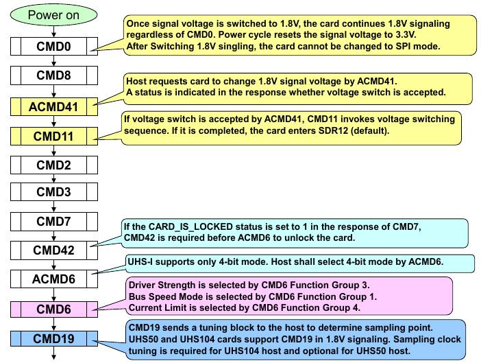
可以看到并没有解锁成功，在CMD42出现了-22的错误。
$ dmesg -l 0,1,2,3,4,5,6,7
[62696.072102] [mmc] CMD 52 err number: -110
[62696.175620] [mmc] CMD 52 err number: -110
[62696.177592] [mmc] CMD 0 err number: 0
[62696.181590] [mmc] CMD 8 err number: 0
[62696.282033] [mmc] CMD 5 err number: -110
[62696.385534] [mmc] CMD 5 err number: -110
[62696.492060] [mmc] CMD 5 err number: -110
[62696.595641] [mmc] CMD 5 err number: -110
[62696.596514] [mmc] CMD 55 err number: 0
[62696.597226] [mmc] CMD 41 err number: 0
[62696.626822] [mmc] CMD 0 err number: 0
[62696.630372] [mmc] CMD 8 err number: 0
[62696.631051] [mmc] CMD 55 err number: 0
[62696.631758] [mmc] CMD 41 err number: 0
[62696.642862] [mmc] CMD 55 err number: 0
[62696.643590] [mmc] CMD 41 err number: 0
[62696.656036] [mmc] CMD 55 err number: 0
[62696.656752] [mmc] CMD 41 err number: 0
[62696.669827] [mmc] CMD 55 err number: 0
[62696.670711] [mmc] CMD 41 err number: 0
[62696.683086] [mmc] CMD 55 err number: 0
[62696.683976] [mmc] CMD 41 err number: 0
[62696.685084] [mmc] CMD 2 err number: 0
[62696.685781] [mmc] CMD 3 err number: 0
[62696.686493] [mmc] CMD 13 err number: 0
[62696.687827] [mmc] CMD 9 err number: 0
[62696.688551] [mmc] CMD 7 err number: 0
[62696.689227] [mmc] CMD 16 err number: 0
[62696.690033] [mmc] CMD 42 err number: -22
[62696.690041] unlock_mmc: unlock cmd error -22
[62696.690045] [SDLOCK] mmc_sd_init_card unlock failed
[62696.690749] [mmc] CMD 13 err number: 0
[62696.690755] [SDLOCK] sdcard is locked
[62696.690773] mmc0: new SD card at address f317
[62696.691709] mmcblk0: mmc0:f317 MF02B 1.88 GiB
Linux系统错误号-22即EINVAL。最后跟到了drivers/mmc/host/sdhci.c里
filename: drivers/mmc/core/core.c
functions:
mmc_wait_for_req -> __mmc_start_request -> host->ops->request
filename: drivers/mmc/host/rtsx_pci_sdmmc.c
functions:
sdmmc_request -> schedule_work -> sd_request -> sd_send_cmd_get_rsp -> sd_normal_rw -> sd_write_data -> rtsx_pci_write_ppbuf -> rtsx_pci_send_cmd
filename: drivers/misc/cardreader/rtsx_pcr.c
rtsx_pci_write_ppbuf
rtsx_pci_add_cmd
rtsx_pci_send_cmd
因为是笔记本电脑，所以相关命令在Realtek的SD读卡器驱动里，而在手机中是drivers/mfd/rtsx_pcr.c。
int rtsx_pci_send_cmd(struct rtsx_pcr *pcr, int timeout)
{
...
if (pcr->trans_result == TRANS_RESULT_FAIL)
err = -EINVAL;
...
}
cp ./drivers/misc/cardreader/* /usr/lib/modules/$(uname -r)/build/drivers/misc/cardreader/
make modules SUBDIRS=drivers/misc/cardreader
通过打印rtsx_pci_add_cmd的参数，可以确定传入的key没有错误
sd_cmd_set_sd_cmd
[75754.016095] [rtsx] cmd_type:1, reg_addr:fda9, ptr:0x50, val:2108292944 SD_CMD0 16
[75754.016100] [rtsx] cmd_type:1, reg_addr:fdaa, ptr:0x0, val:2108358400 SD_CMD1
[75754.016104] [rtsx] cmd_type:1, reg_addr:fdab, ptr:0x0, val:2108423936 SD_CMD2
[75754.016111] [rtsx] cmd_type:1, reg_addr:fdac, ptr:0x0, val:2108489472 SD_CMD3
[75754.016115] [rtsx] cmd_type:1, reg_addr:fdad, ptr:0x12, val:2108555026 SD_CMD4 0x12
sd_send_cmd_get_rsp
[75754.016119] [rtsx] cmd_type:1, reg_addr:fda1, ptr:0x1, val:2107768577 WRITE_REG_CMD SD_CFG2
[75754.016122] [rtsx] cmd_type:1, reg_addr:fd5b, ptr:0x1, val:2103116033 CARD_DATA_SOURCE
[75754.016126] [rtsx] cmd_type:1, reg_addr:fdb3, ptr:0x88, val:2108948360 WRITE_REG_CMD SD_TRANSFER
[75754.016130] [rtsx] cmd_type:2, reg_addr:fdb3, ptr:0x60, val:-1112317856 CHECK_REG_CMD SD_TRANSFER
[75754.016134] [rtsx] cmd_type:0, reg_addr:fda9, ptr:0x0, val:1034485760 sd_cmd_set_sd_cmd 0
[75754.016138] [rtsx] cmd_type:0, reg_addr:fdaa, ptr:0x0, val:1034551296 SD_CMD1
[75754.016142] [rtsx] cmd_type:0, reg_addr:fdab, ptr:0x0, val:1034616832 SD_CMD1
[75754.016146] [rtsx] cmd_type:0, reg_addr:fdac, ptr:0x0, val:1034682368 SD_CMD2
[75754.016150] [rtsx] cmd_type:0, reg_addr:fdad, ptr:0x0, val:1034747904 SD_CMD3
[75754.016153] [rtsx] cmd_type:0, reg_addr:fda3, ptr:0x0, val:1034092544 SD_STAT1
sd_cmd_set_sd_cmd
[75754.016787] [SDLOCK] unlock_mmc MMC_SET_BLOCKLEN 18
[75754.016820] [rtsx] cmd_type:1, reg_addr:fda9, ptr:0x6a, val:2108292970 SD_CMD0 42
[75754.016823] [rtsx] cmd_type:1, reg_addr:fdaa, ptr:0x0, val:2108358400 SD_CMD1
[75754.016826] [rtsx] cmd_type:1, reg_addr:fdab, ptr:0x0, val:2108423936 SD_CMD2
[75754.016829] [rtsx] cmd_type:1, reg_addr:fdac, ptr:0x0, val:2108489472 SD_CMD3
[75754.016831] [rtsx] cmd_type:1, reg_addr:fdad, ptr:0x0, val:2108555008 SD_CMD4
[75754.016834] [rtsx] cmd_type:1, reg_addr:fda1, ptr:0x1, val:2107768577 WRITE_REG_CMD SD_CFG2
[75754.016837] [rtsx] cmd_type:1, reg_addr:fd5b, ptr:0x1, val:2103116033 CARD_DATA_SOURCE
[75754.016839] [rtsx] cmd_type:1, reg_addr:fdb3, ptr:0x88, val:2108948360 WRITE_REG_CMD SD_TRANSFER
[75754.016842] [rtsx] cmd_type:2, reg_addr:fdb3, ptr:0x60, val:-1112317856 CHECK_REG_CMD SD_TRANSFER
[75754.016845] [rtsx] cmd_type:0, reg_addr:fda9, ptr:0x0, val:1034485760 sd_cmd_set_sd_cmd 0
[75754.016848] [rtsx] cmd_type:0, reg_addr:fdaa, ptr:0x0, val:1034551296 SD_CMD1
[75754.016851] [rtsx] cmd_type:0, reg_addr:fdab, ptr:0x0, val:1034616832 SD_CMD2
[75754.016854] [rtsx] cmd_type:0, reg_addr:fdac, ptr:0x0, val:1034682368 SD_CMD3
[75754.016856] [rtsx] cmd_type:0, reg_addr:fdad, ptr:0x0, val:1034747904 SD_CMD4
[75754.016862] [rtsx] cmd_type:0, reg_addr:fda3, ptr:0x0, val:1034092544 SD_STAT1
write data
[75754.017492] [rtsx] cmd_type:1, reg_addr:fa00, ptr:0x0, val:2046885632
[75754.017496] [rtsx] cmd_type:1, reg_addr:fa01, ptr:0x10, val:2046951184
[75754.017499] [rtsx] cmd_type:1, reg_addr:fa02, ptr:0x5f, val:2047016799
[75754.017502] [rtsx] cmd_type:1, reg_addr:fa03, ptr:0xfc, val:2047082492
[75754.017505] [rtsx] cmd_type:1, reg_addr:fa04, ptr:0xa1, val:2047147937
[75754.017508] [rtsx] cmd_type:1, reg_addr:fa05, ptr:0x9f, val:2047213471
[75754.017511] [rtsx] cmd_type:1, reg_addr:fa06, ptr:0xfc, val:2047279100
[75754.017513] [rtsx] cmd_type:1, reg_addr:fa07, ptr:0xdb, val:2047344573
[75754.017518] [rtsx] cmd_type:1, reg_addr:fa08, ptr:0x58, val:2047410008
[75754.017521] [rtsx] cmd_type:1, reg_addr:fa09, ptr:0x99, val:2047475609
[75754.017524] [rtsx] cmd_type:1, reg_addr:fa0a, ptr:0xa8, val:2047541160
[75754.017526] [rtsx] cmd_type:1, reg_addr:fa0b, ptr:0x2c, val:2047606572
[75754.017529] [rtsx] cmd_type:1, reg_addr:fa0c, ptr:0x4e, val:2047672142
[75754.017531] [rtsx] cmd_type:1, reg_addr:fa0d, ptr:0x26, val:2047737638
[75754.017534] [rtsx] cmd_type:1, reg_addr:fa0e, ptr:0x5f, val:2047803231
[75754.017537] [rtsx] cmd_type:1, reg_addr:fa0f, ptr:0x99, val:2047868825
[75754.017539] [rtsx] cmd_type:1, reg_addr:fa10, ptr:0xc7, val:2047934407
[75754.017542] [rtsx] cmd_type:1, reg_addr:fa11, ptr:0x6b, val:2047999851
sd_cmd_set_block_len
[75754.017569] [rtsx] cmd_type:1, reg_addr:fdb1, ptr:0x1, val:2108817153 SD_BLOCK_CNT_L 1
[75754.017572] [rtsx] cmd_type:1, reg_addr:fdb2, ptr:0x0, val:2108882688 SD_BLOCK_CNT_H
[75754.017575] [rtsx] cmd_type:1, reg_addr:fdaf, ptr:0x12, val:2108686098 SD_BYTE_CNT_L 18
[75754.017577] [rtsx] cmd_type:1, reg_addr:fdb0, ptr:0x0, val:2108751616 SD_BYTE_CNT_H
[75754.017580] [rtsx] cmd_type:1, reg_addr:fda1, ptr:0x0, val:2107768576 WRITE_REG_CMD SD_CFG2
[75754.017583] [rtsx] cmd_type:1, reg_addr:fdb3, ptr:0x81, val:2108948353 WRITE_REG_CMD SD_TRANSFER
[75754.017585] [rtsx] cmd_type:2, reg_addr:fdb3, ptr:0x40, val:-1112326080 CHECK_REG_CMD SD_TRANSFER
Unlocking SD Card by Raspberry Pi
sudo dd bs=4M if=/home/cygnus/IMG/2018-06-27-raspbian-stretch-lite/2018-06-27-raspbian-stretch-lite.img of=/dev/mmcblk0 status=progress conv=fsync
下载对应版本的树莓派源代码，并把工具链加入环境变量
git clone --depth=1 --branch rpi-4.14.y https://github.com/raspberrypi/linux
export PATH=$PATH:/home/cygnus/git/rapi-tools/arm-bcm2708/gcc-linaro-arm-linux-gnueabihf-raspbian-x64/bin
使用BCM2709配置，并在MENU CONFIG里把SD卡驱动和MMC驱动变为内核模块形式。最后编译zImage，模块，设备树，然后更新SD卡里的文件。 kernel.img is used by RPi 1B, 1A, A+, B+, 2B (first version) Z, Z (with camera), ZW, CM1 kernel7.img is used by the RPi2B2, RPi3B, CM3 and CM3L.
KERNEL=kernel7
make ARCH=arm CROSS_COMPILE=arm-linux-gnueabihf- bcm2709_defconfig
make ARCH=arm CROSS_COMPILE=arm-linux-gnueabihf- menuconfig
make ARCH=arm CROSS_COMPILE=arm-linux-gnueabihf- -j16 zImage modules dtbs
sudo make ARCH=arm CROSS_COMPILE=arm-linux-gnueabihf- INSTALL_MOD_PATH=/run/media/cygnus/rootfs modules_install
更新内核
sudo cp /run/media/cygnus/boot/$KERNEL.img /run/media/cygnus/boot/$KERNEL-backup.img
sudo cp arch/arm/boot/zImage /run/media/cygnus/boot/$KERNEL.img
更新设备树
sudo cp arch/arm/boot/dts/*.dtb /run/media/cygnus/boot/
sudo cp arch/arm/boot/dts/overlays/*.dtb* /run/media/cygnus/boot/overlays/
在boot config加入下面配置
dtoverlay=sdio,poll_once=off
| Name | SD Card | Raspberry Pi Pin Num |
|---|---|---|
| VCC | 4 | 17 |
| GND | 6 | 20 |
| CLK/SCLK | 5 | 15 |
| CMD/MOSI | 2 | 16 |
| DAT0/MISO | 7 | 18 |
| DAT1 | 8 | 22 |
| DAT2 | 9 | 37 |
| DAT3/CS | 1 | 13 |